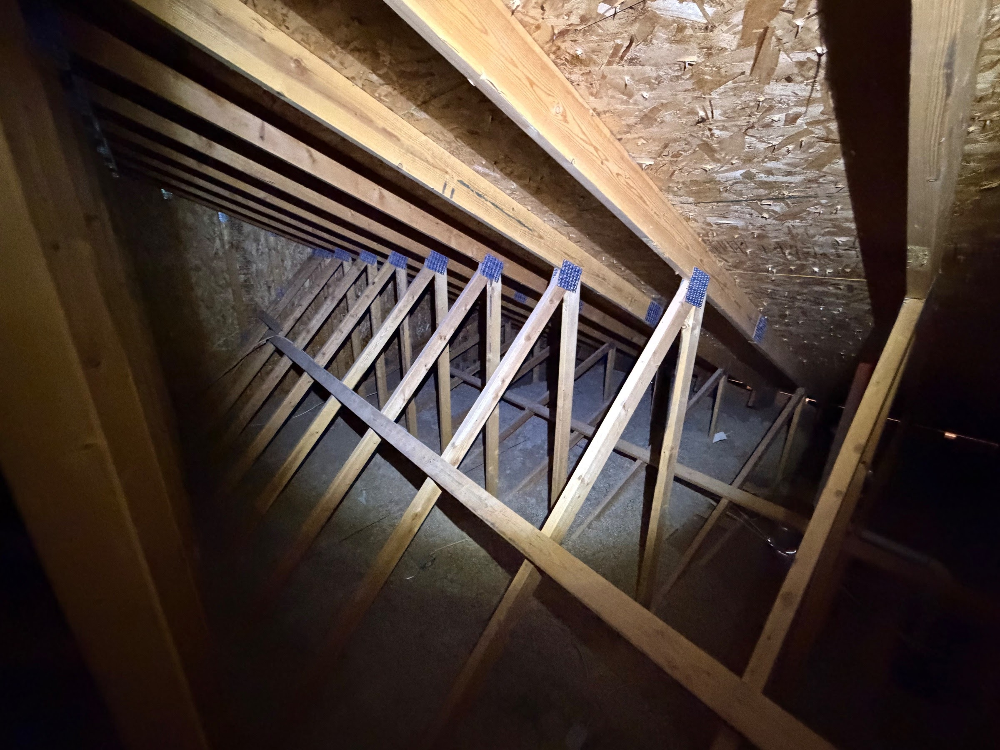
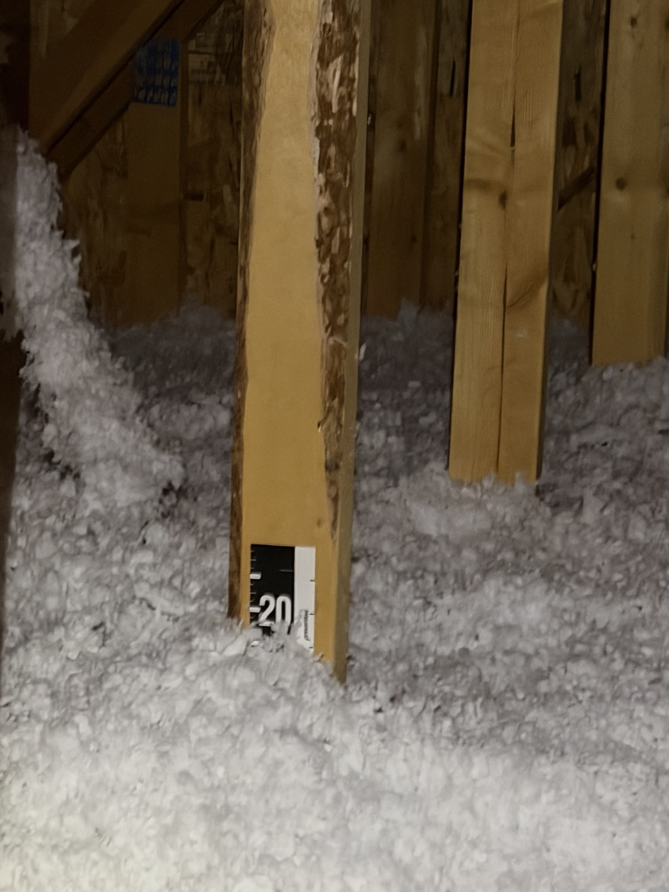
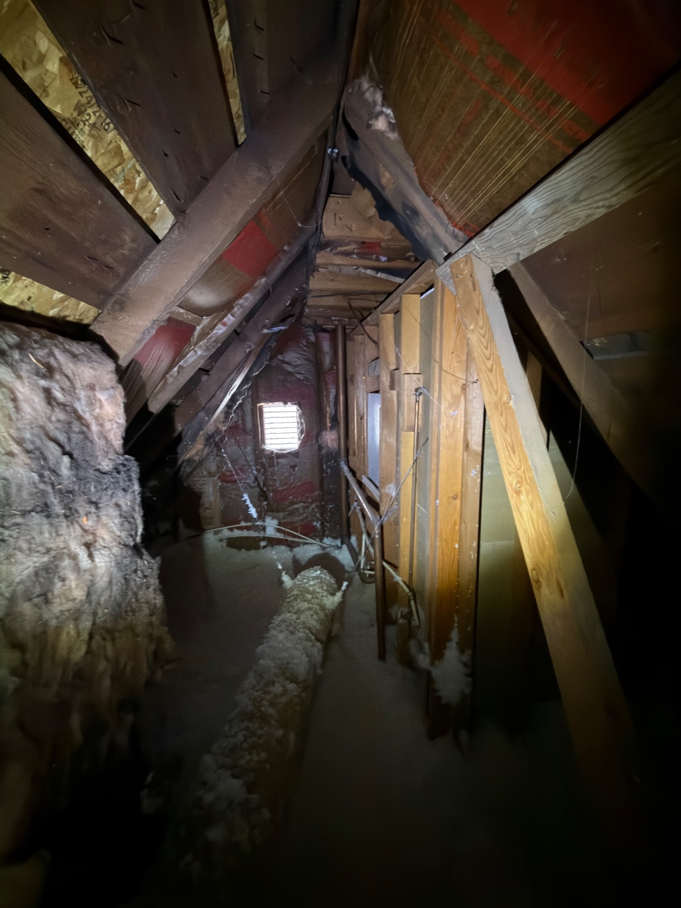
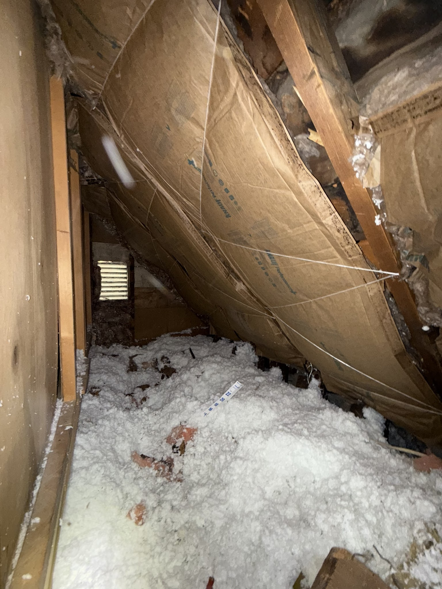
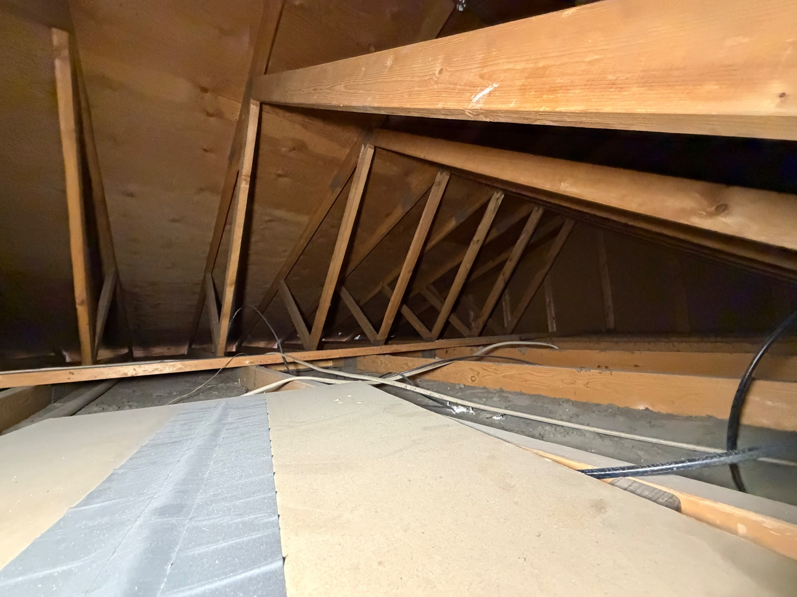
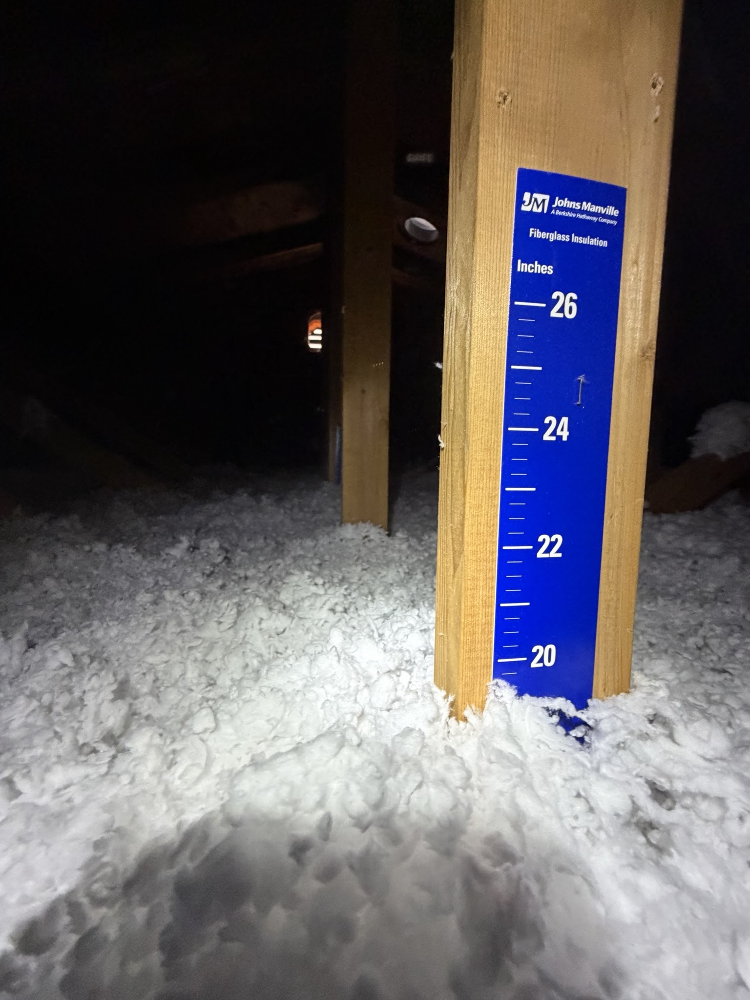
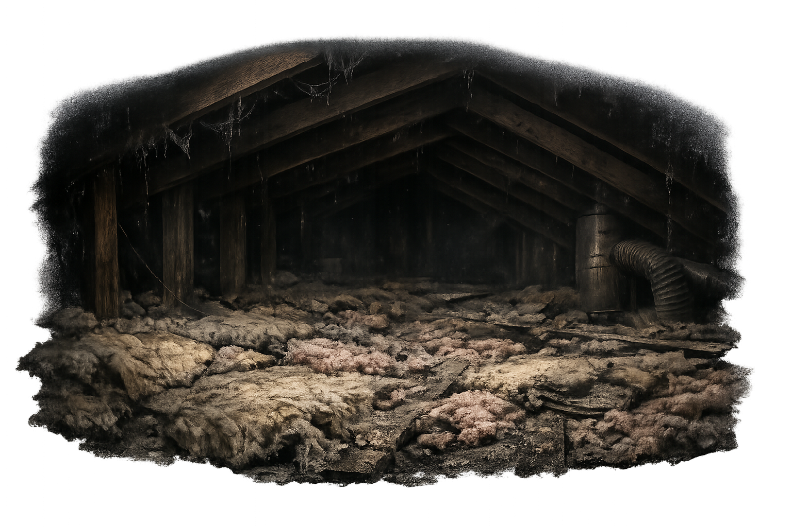

Second-floor comfort issues
Upper bedrooms and loft spaces often feel the attic system's weaknesses before the rest of the house does.
Service Area
In South Jordan, attic issues often show up in newer suburban homes as upstairs comfort complaints, rooms over garages that never balance well, and attic systems that are technically present but not performing the way the homeowner expected. Good Attic helps South Jordan homeowners solve those problems with insulation, removal, pest remediation, attic fans, and air sealing.
South Jordan Attic Health Score
Compressed or missing insulation
Air leaks around attic penetrations
Dust, odors, or contaminated material
Pest activity or nesting debris
Contaminated insulation removed
Air leaks sealed for efficiency
Attic fully sanitized
Ventilation optimized
Fresh insulation installed
A Good Attic quietly changes how your whole home feels.
South Jordan Attic Health Score
Compressed or missing insulation
Air leaks around attic penetrations
Dust, odors, or contaminated material
Pest activity or nesting debris
Contaminated insulation removed
Air leaks sealed for efficiency
Attic fully sanitized
Ventilation optimized
Fresh insulation installed
Common local issues
Upper bedrooms and loft spaces often feel the attic system's weaknesses before the rest of the house does.
Insulation depth or attic detailing may not be enough to create the steady comfort people thought they were buying.
Bonus rooms over garages frequently reveal where the attic plan needs more support.
Inspection checkpoints nearby
The goal is to document what the attic is actually doing near South Jordan before the project gets reduced to the first service label that sounds plausible.
Good Attic checks whether homes near South Jordan have a clean top-off opportunity, a settled insulation layer, or attic material that is no longer worth building on.
The Salt Lake City team documents whether open attic bypasses, dusty airflow, or weak coverage are helping drive the comfort complaints homeowners notice first.
If the attic near South Jordan needs removal, sanitation, or better access before the final install belongs, the inspection should show that clearly instead of skipping ahead to the easy sale.
Real attic proof
These are real attic photo sets from South Jordan homes, showing documented attic conditions before the work and the finished attic afterward.


Real attic photos from a South Jordan home showing the documented attic condition before work and the finished attic afterward.
Real before/after photo set

Real attic photos from a South Jordan home showing the documented attic condition before work and the finished attic afterward.
Real before/after photo set

Real attic photos from a South Jordan home showing the documented attic condition before work and the finished attic afterward.
Real before/after photo setWhen the scope gets bigger
These are the moments where the attic usually needs a more complete plan so the homeowner gets a cleaner result and a more trustworthy finish line.
When homes in South Jordan have hot rooms, dirty insulation, and higher energy strain at the same time, the attic usually needs a broader plan than a one-line product pitch.
If compromised insulation or debris is covering the attic floor, the project often expands because cleanup, removal, or prep work need to happen before the final improvement belongs.
The cleaner answer in South Jordan is often the one that leaves the attic easier to trust afterward, even when that means a fuller scope than the homeowner expected at first.
Available services
Use these service links to match the attic problem to the right solution in this market.
Salt Lake City
Upgrade underperforming attic insulation so the whole home feels steadier, cleaner, and more efficient.
View service
Salt Lake City
Remove compromised attic material so the space can be cleaned up, sealed, and rebuilt the right way.
View serviceSalt Lake City
Clean up the attic after rodents or other attic pests so the space can be sanitary, usable, and ready for restoration.
View serviceSalt Lake City
Support attic airflow with fan solutions that help reduce trapped heat and back up the rest of the attic strategy.
View serviceSalt Lake City
Stop conditioned air from leaking into the attic and dusty attic air from drifting back into the home.
View serviceBest next guides
These guides are chosen to support the exact kinds of attic questions homeowners near this city tend to have before they commit to a service path.
Best next guide
Use this guide when homeowners in South Jordan need a clearer picture of what the attic visit should document before choosing a service path.
Read inspection guideComfort symptom guide
This guide helps South Jordan homeowners connect upstairs discomfort to the attic causes that usually need insulation, sealing, or broader correction.
Read comfort guide
Cleanup scope guide
This guide helps South Jordan homeowners understand when the attic needs a cleaner reset instead of a small cleanup or quick top-off.
Read cleanup guideLocal cost guide
Use the Salt Lake City cost guide when the local question is not just what the attic needs, but what usually makes the honest quote in this market grow.
Compare cost driversWhy homeowners call
Homeowners want more refined attic performance than a basic new-build standard delivered.
A whole-attic plan can fix hot-room complaints better than chasing the thermostat or the HVAC alone.
The right scope should feel clean, modern, and well-documented from the first visit.
How the local path works
Main local authority page
Start with the Salt Lake City hub when you want the full local attic story, city support pages, and the 385-336-0062 market contact path in one place.
Open market hubDirect request path
Use the contact page when the attic symptoms are already clear enough to send the request straight into the Salt Lake City team.
Start a requestExpectation-setting guide
Use the inspection guide when the homeowner wants to understand how the attic findings turn into a smarter local recommendation.
Read guideFAQ
Yes. Newer homes can still have thin coverage, leakage, or attic heat-management issues that show up in daily comfort.
That is a common attic symptom, especially in rooms over garages or at the hottest part of the upper floor.
Yes. The attic assessment helps determine whether the real issue is coverage, leakage, heat buildup, or a combination.
Conversion
Start with the Salt Lake City market hub or send a request directly through contact so the right local service path can start.
Best next pages
These are the most relevant next pages from here based on the current attic topic, market, or support path.
Best next page
Open Salt Lake City, UT for the full local market hub, service pages, city support pages, and the right market contact path.
Open pageBest next page
Use Attic Insulation when you want attic guidance tied to a specific metro and service instead of a broader overview page.
Open page
Best next page
Use Insulation Removal when you want attic guidance tied to a specific metro and service instead of a broader overview page.
Open page